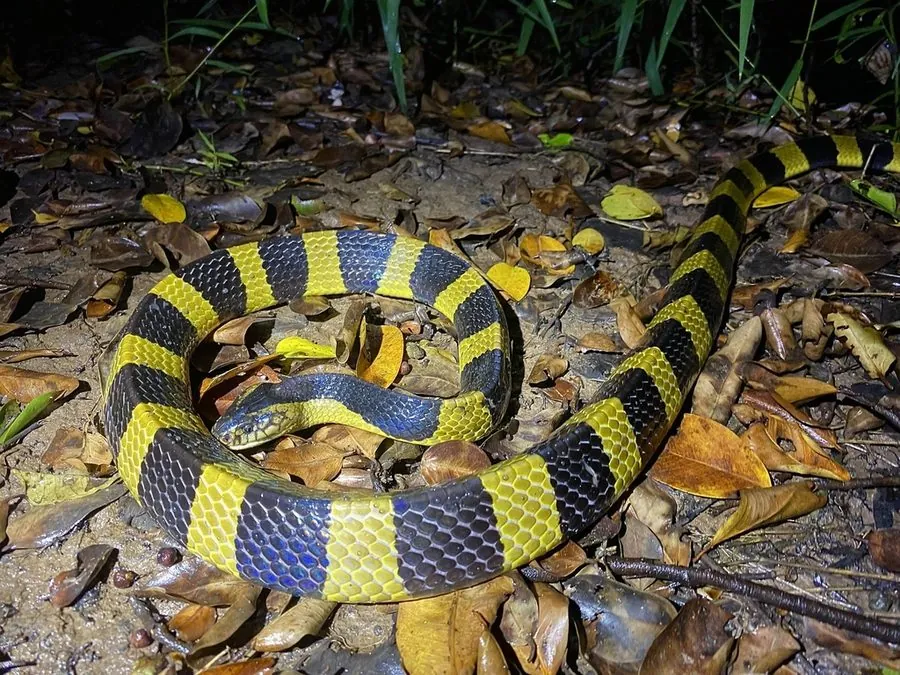

爬行动物 · 动物界
金环蛇 Bungarus fasciatus

中国南方的剧毒蛇，身体有黑黄相间的宽环纹，夜间活动，毒液以神经毒素为主，被咬须立即就医，切勿徒手抓捕。
- 分类
- 门脊索动物门纲爬行纲目有鳞目科眼镜蛇科属环蛇属
- 栖息环境
- 水田、溪流边、灌丛、森林底层与村落附近
- 地理分布
- 中国南方多省区及东南亚地区
- 保护级别
- IUCN 无危（LC）；中国国家二级保护动物
物种志
金环蛇体长 1.2–1.8 米，身体粗壮，头部椭圆形，吻端钝圆，尾短而钝；全身由黑色与黄色（或金黄）相间的宽环纹环绕，环纹宽度大致相等，“金环”之名由此而来，背脊中央一行鳞片明显扩大。它行动缓慢，性情温和，白天多藏于洞穴石缝，夜间出来活动。
它分布于中国南方以及东南亚地区，栖息于水田、溪边、灌丛和森林底层，捕食鳝鱼、泥鳅、鱼类、蛙类和其他蛇类。每年 5–8 月繁殖，雌蛇产卵 5–12 枚，孵化期约 45–60 天。金环蛇毒性很强，毒液以神经毒素为主，被咬后伤口不一定明显，却可能迅速出现呼吸麻痹，须立即就医；它已被列为国家二级保护动物，禁止非法捕捉和买卖。
形态与习性
- 食性鳝鱼、泥鳅、鱼类、蛙类和其他蛇类
- 体长1.2–1.8 m
- 体重约 0.5–1.5 kg
- 寿命约 10–15 年
- 繁殖卵生，5–12 枚，孵化 45–60 天
- 毒性神经毒素为主，被咬须立即就医
趣味知识
- 金环蛇的黑黄宽环纹宽度大致相等，是它最醒目的识别特征。
- 它性情温和、行动缓慢，白天多躲在洞穴和石缝中。
- 金环蛇已被列为国家二级保护动物，禁止非法捕捉和买卖。